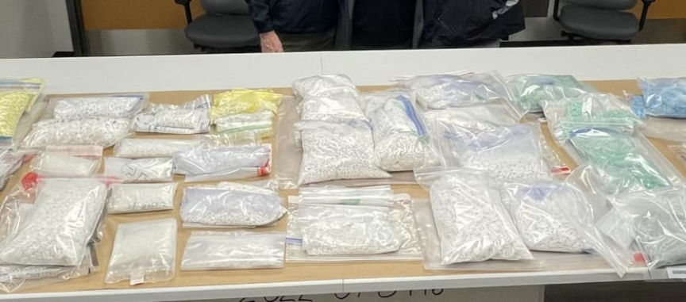
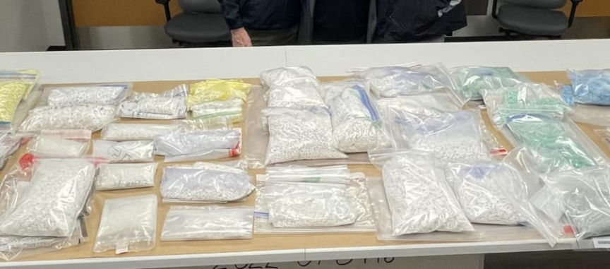

Feds Arrest Prolific Fentanyl Pill Supplier
A man living in New Jersey allegedly shipped thousands of fentanyl pills across the country. Feds seized roughly 8,000 fake pills during the investigation.
The investigation also resulted in the takedown of a pill mill in New Jersey, where police seized approximately 60 kilograms of fentanyl.
According to an announcement from the Drug Enforcement Administration, [em]Joel Manuel De Jesus Amparo[/em], 23, used “mailing facilities” on Staten Island, New York, to ship thousands of fake oxycodone pills across the country.

DEA Special Agent in Charge Frank A Tarentino III
“DEA lab testing reveals that four out of every ten pills contain a potential lethal dose of fentanyl. Seizures like this one, saves lives. Removing 3,600 potential lethal doses of fentanyl for distribution through our mail system, as well as shutting down a multi-million-dollar industrial pill mill in New Jersey keeps people safe and makes communities healthier. I applaud our law enforcement partners for their hard work and diligence in this investigation.”
In connection with the interstate fentanyl mailing operation, Joel Manuel De Jesus Amparo is facing charges of first-degree criminal possession of a controlled substance and “related charges.”
The DEA’s announcement referenced an indictment, but it does not seem to have been released to the public yet. The law enforcement agencies involved in the investigation included:[list]*RCDA’s Narcotics-Investigations Bureau;*U.S. Drug Enforcement Administration’s New York Division;*Homeland Security Investigations New York led Border Enforcement Security Task Force;*NYPD;*New York City Special Narcotics Prosecutors Office;*United States Postal Inspection Service; and*Hudson County Prosecutors Office.[/list]
During the investigation, law enforcement officers seized roughly 8,000 fentanyl pills from packages at mailing facilities on Staten Island.

Staten Island District Attorney Michael E. McMahon:
“The impact of this joint investigation, which began with a case in the Staten Island DA’s office and resulted in the dismantling of a drug enterprise in New Jersey, will not only be felt in our region but will echo across the entire United States and help to save millions of lives potentially. Each of the pills recovered from this major drug seizure was destined to reach areas across New York, New Jersey, and throughout the country, containing enough fentanyl to carry its own death sentence. The dangers of fentanyl cannot be overstated. This deadly drug has contributed to over 80 percent of fatal overdoses on Staten Island since 2020, and it only continues to destroy more and more lives. While we will continue to offer help and treatment to those struggling with addiction illness, major drug traffickers who profit off the pain and suffering of others must be stopped and held fully accountable for their actions. We are grateful to have worked with such dedicated law enforcement partners on this investigation. We remain committed to our continued partnership as we ensure those involved are brought to justice. This type of interagency and regional cooperation is necessary to battling the five-alarm fire that this plague has become. I thank all of our partner agencies for their collaboration and hard work throughout this important case.”
I will likely follow up on this one once more information is available.
New Jersey Man Indicted After Joint Investigation Uncovers Interstate Fentanyl Mailing Operation | www.dea.gov, archive.is, archive.org
h/t reader
The investigation also resulted in the takedown of a pill mill in New Jersey, where police seized approximately 60 kilograms of fentanyl.
According to an announcement from the Drug Enforcement Administration, [em]Joel Manuel De Jesus Amparo[/em], 23, used “mailing facilities” on Staten Island, New York, to ship thousands of fake oxycodone pills across the country.

Fentanyl pills seized during the investigation | DEA
DEA Special Agent in Charge Frank A Tarentino III
“DEA lab testing reveals that four out of every ten pills contain a potential lethal dose of fentanyl. Seizures like this one, saves lives. Removing 3,600 potential lethal doses of fentanyl for distribution through our mail system, as well as shutting down a multi-million-dollar industrial pill mill in New Jersey keeps people safe and makes communities healthier. I applaud our law enforcement partners for their hard work and diligence in this investigation.”
In connection with the interstate fentanyl mailing operation, Joel Manuel De Jesus Amparo is facing charges of first-degree criminal possession of a controlled substance and “related charges.”
The DEA’s announcement referenced an indictment, but it does not seem to have been released to the public yet. The law enforcement agencies involved in the investigation included:[list]*RCDA’s Narcotics-Investigations Bureau;*U.S. Drug Enforcement Administration’s New York Division;*Homeland Security Investigations New York led Border Enforcement Security Task Force;*NYPD;*New York City Special Narcotics Prosecutors Office;*United States Postal Inspection Service; and*Hudson County Prosecutors Office.[/list]
During the investigation, law enforcement officers seized roughly 8,000 fentanyl pills from packages at mailing facilities on Staten Island.
More fentanyl pills seized during the investigation | DEA
Staten Island District Attorney Michael E. McMahon:
“The impact of this joint investigation, which began with a case in the Staten Island DA’s office and resulted in the dismantling of a drug enterprise in New Jersey, will not only be felt in our region but will echo across the entire United States and help to save millions of lives potentially. Each of the pills recovered from this major drug seizure was destined to reach areas across New York, New Jersey, and throughout the country, containing enough fentanyl to carry its own death sentence. The dangers of fentanyl cannot be overstated. This deadly drug has contributed to over 80 percent of fatal overdoses on Staten Island since 2020, and it only continues to destroy more and more lives. While we will continue to offer help and treatment to those struggling with addiction illness, major drug traffickers who profit off the pain and suffering of others must be stopped and held fully accountable for their actions. We are grateful to have worked with such dedicated law enforcement partners on this investigation. We remain committed to our continued partnership as we ensure those involved are brought to justice. This type of interagency and regional cooperation is necessary to battling the five-alarm fire that this plague has become. I thank all of our partner agencies for their collaboration and hard work throughout this important case.”
I will likely follow up on this one once more information is available.
New Jersey Man Indicted After Joint Investigation Uncovers Interstate Fentanyl Mailing Operation | www.dea.gov, archive.is, archive.org
h/t reader